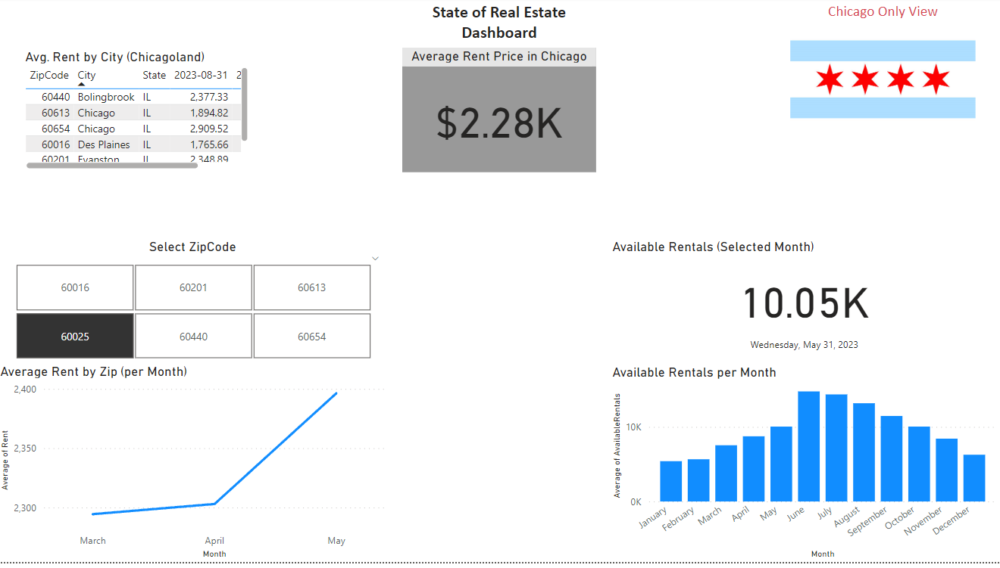
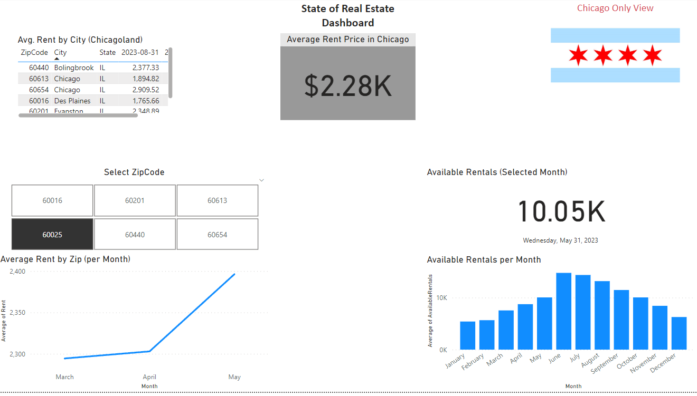

Click on the buttons to view detailed information for each project
Real Estate Dashboard
Background Context
This dashboard was built out of one simple, personal desire: to prepare myself for my first eventual real estate purchase.
Being somebody that's in their 20's, it's inevitable that one eventually hits the point in their life where they ask themselves "... what's next" after renting all their adult life.
While I am far, far away from owning a nice little, quiet cabin somewhere deep in the woods of the upper peninsula, I figured there was no better way to plan than by building my own solution to track relevant metrics for my geographical area.
Technical Description
Languages:
Python, SQL
Visualization Tools:
Pandas, NumPy, MatplotLib, PowerBI
Addtl. Tools:
Jupyter Notebooks, sqllite
Iteration #1
At first, I needed to find a valuable source to either scrape or pull data from, and I managed to settle on leveraging the Zillow API first for a few select regions. As the only goal at this stage was to display at least some relevant RE data, a basic Jupyter Notebook was made
and data was pulled into a Python script that formatted the resulting data, stored it in a dataframe, and subsequently exported the cleaned data into a CSV file.
By leveraging the power of Jupyter & the Python language, it's easy to quickly query some data and see how it looks in a visualized notebook format.
The only issue with this though, is that while it's really easy to be able to write your code & immediately view it in a nice "web-ui" format, any target audience
members who may not have a data background & thus are not familiar with the Jupyter UI may find looking at data here to be a bit cumbersome.
Iteration #2
Once I finished developing a rudimentary ETL process (extracting the data from the source using a Python script, cleaning it up using various scripts & testing
in Jupyter notebooks, pushing the data to a locally hosted SQL database, and orchestrating the execution of the script using native Microsoft tools), I was able to
start leveraging PowerBI to better visualize some of the data. After a few rounds of saving and testing the data in the PowerBI UI, this is what came out as the result.
Basic? Yes. Brutally plain? Yes. But getting PowerBI to display at least *some* data was a journey in and of itself, so I've included what this looks like just to serve as a reminder
of what the first stage looked like!
Iteration #3
Now that the data was displayed, I was able to take a stab at displaying at least something more visually appealing. The image above details this first attempt!
Iteration #4
At this step in the process, I'll admit: being somebody with a more logical brain meant that I had *zero* clue on how to go about designing this project. What next, you may ask?
Well, this required me putting on the hat of a Product Manager, and playing the role. What did this entail? Well, the realization that end-user input would be valuable before
continuing to develop this project.
I quickly phoned a friend, and had her give me her first initial impression. At first glance, she was able to instantly identify just how much of an eyesore the placement
of the elements was. Ta-da; my first feature improvement request!
Iteration #5

Finally, I held another round of gauging user-feedback, and I realized the dashboard was missing a key functionality: sorting capabilities, and something to
differentiate this page vs the other page (centered around general US metrics). This screenshot is a result of this feedback loop; one that now looks much less of
an eyesore compared to where we started off.
Market Tech Tracker POC
Background Context
Disclaimer:
All the data seen in the following screenshots is randomized data; meaning *none* of it is actual data produced by
any large enterprise entity.
Being that I am absolutely enamored with the idea of global business, I figured it would be fun to try developing a dashboard containing very market & region-specific
insights in an easy to read format. Thus, this quirky little React-powered web app was born. Was there any monetary value associated with this project? Not at all,
but I had a blast showcasing it to a few colleagues of mine over dinner; demonstrating the capabilities that integrating visualization tools (like PowerBI) with React
can bring.
Technical Description
Languages:
Python, HTML/CSS, JavaScript
Visualization Tools:
PowerBI
Addtl. Tools:
Jupyter Notebooks, Pandas
Iteration #1
To start, I had to generate a randomized dataset pertaining to 2 different contexts: global business, and IT asset management. Simple enough, right? Well, as I was not able to
find a "ready-made" dataset on the usual sites (like Kaggle), I had to use a randomizer tool that I provided a few arguments to. After that, I received a dataset, while a bit
dirty, that was ripe for visualization.
The screenshot details just one example of the dataset that I was working with, but in order to even get it in this state, I had to leverage Python and the Pandas library
to clean up the columns, character-sets, and other small errors that were driving me nuts.
Iteration #2
What good is a web app without an easy to use web interface? After testing 2 different variations, I settled on this design as the landing page. This decision
was made after having consulted a few colleagues of mine on what they would consider a "simplistic" market-facing view, and so a simple table list with the country
name & flag as values.
Iteration #3
When we think of global business, what sorts of metrics come to mind? To get a better understanding of what the average joe would want to see, I did a few simple
end-user surveys amongst my small group of select colleagues, and devised a list of about 10 different bits of information. From here, I refined this list further,
and developed a view in my dashboard that visualized some of these. While the data above is completely falsified, it's fascinating to see just how cleanly we can visualize
some of this information using modern web-development technologies.
Iteration #4

While React is a powerful tool, sometimes it's easiest to not have to "re-invent" the wheel, and this is where tools like PowerBI come in. As I was working with
a handful of different CSV and JSON files w/ market-specific data, being able to use the PowerBI functionality to clean, specifiy, and merge data sources was a game changer.
The screenshot above demonstrates what a market-specific view within PowerBI looks like.
Background Context
This dashboard was built out of one simple, personal desire: to prepare myself for my first eventual real estate purchase.
Being somebody that's in their 20's, it's inevitable that one eventually hits the point in their life where they ask themselves "... what's next" after renting all their adult life. While I am far, far away from owning a nice little, quiet cabin somewhere deep in the woods of the upper peninsula, I figured there was no better way to plan than by building my own solution to track relevant metrics for my geographical area.
Technical Description
Languages:
Python, SQLVisualization Tools:
Pandas, NumPy, MatplotLib, PowerBIAddtl. Tools:
Jupyter Notebooks, sqlliteIteration #1
At first, I needed to find a valuable source to either scrape or pull data from, and I managed to settle on leveraging the Zillow API first for a few select regions. As the only goal at this stage was to display at least some relevant RE data, a basic Jupyter Notebook was made and data was pulled into a Python script that formatted the resulting data, stored it in a dataframe, and subsequently exported the cleaned data into a CSV file.
By leveraging the power of Jupyter & the Python language, it's easy to quickly query some data and see how it looks in a visualized notebook format. The only issue with this though, is that while it's really easy to be able to write your code & immediately view it in a nice "web-ui" format, any target audience members who may not have a data background & thus are not familiar with the Jupyter UI may find looking at data here to be a bit cumbersome.
Iteration #2
Once I finished developing a rudimentary ETL process (extracting the data from the source using a Python script, cleaning it up using various scripts & testing in Jupyter notebooks, pushing the data to a locally hosted SQL database, and orchestrating the execution of the script using native Microsoft tools), I was able to start leveraging PowerBI to better visualize some of the data. After a few rounds of saving and testing the data in the PowerBI UI, this is what came out as the result.
Basic? Yes. Brutally plain? Yes. But getting PowerBI to display at least *some* data was a journey in and of itself, so I've included what this looks like just to serve as a reminder of what the first stage looked like!
Iteration #3
Now that the data was displayed, I was able to take a stab at displaying at least something more visually appealing. The image above details this first attempt!
Iteration #4
At this step in the process, I'll admit: being somebody with a more logical brain meant that I had *zero* clue on how to go about designing this project. What next, you may ask? Well, this required me putting on the hat of a Product Manager, and playing the role. What did this entail? Well, the realization that end-user input would be valuable before continuing to develop this project.
I quickly phoned a friend, and had her give me her first initial impression. At first glance, she was able to instantly identify just how much of an eyesore the placement of the elements was. Ta-da; my first feature improvement request!
Iteration #5
Finally, I held another round of gauging user-feedback, and I realized the dashboard was missing a key functionality: sorting capabilities, and something to differentiate this page vs the other page (centered around general US metrics). This screenshot is a result of this feedback loop; one that now looks much less of an eyesore compared to where we started off.
Background Context
Disclaimer:
All the data seen in the following screenshots is randomized data; meaning *none* of it is actual data produced by any large enterprise entity.
Being that I am absolutely enamored with the idea of global business, I figured it would be fun to try developing a dashboard containing very market & region-specific insights in an easy to read format. Thus, this quirky little React-powered web app was born. Was there any monetary value associated with this project? Not at all, but I had a blast showcasing it to a few colleagues of mine over dinner; demonstrating the capabilities that integrating visualization tools (like PowerBI) with React can bring.
Technical Description
Languages:
Python, HTML/CSS, JavaScriptVisualization Tools:
PowerBIAddtl. Tools:
Jupyter Notebooks, PandasIteration #1
To start, I had to generate a randomized dataset pertaining to 2 different contexts: global business, and IT asset management. Simple enough, right? Well, as I was not able to find a "ready-made" dataset on the usual sites (like Kaggle), I had to use a randomizer tool that I provided a few arguments to. After that, I received a dataset, while a bit dirty, that was ripe for visualization.
The screenshot details just one example of the dataset that I was working with, but in order to even get it in this state, I had to leverage Python and the Pandas library to clean up the columns, character-sets, and other small errors that were driving me nuts.
Iteration #2
What good is a web app without an easy to use web interface? After testing 2 different variations, I settled on this design as the landing page. This decision was made after having consulted a few colleagues of mine on what they would consider a "simplistic" market-facing view, and so a simple table list with the country name & flag as values.
Iteration #3
When we think of global business, what sorts of metrics come to mind? To get a better understanding of what the average joe would want to see, I did a few simple end-user surveys amongst my small group of select colleagues, and devised a list of about 10 different bits of information. From here, I refined this list further, and developed a view in my dashboard that visualized some of these. While the data above is completely falsified, it's fascinating to see just how cleanly we can visualize some of this information using modern web-development technologies.
Iteration #4
While React is a powerful tool, sometimes it's easiest to not have to "re-invent" the wheel, and this is where tools like PowerBI come in. As I was working with a handful of different CSV and JSON files w/ market-specific data, being able to use the PowerBI functionality to clean, specifiy, and merge data sources was a game changer. The screenshot above demonstrates what a market-specific view within PowerBI looks like.